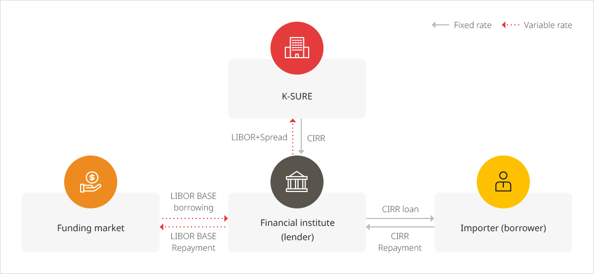

Interest Rate Risk Insurance
Overview of Scheme
This scheme is to compensate for losses suffered by financial institutes that provided export finance with a repayment period of at least two years and are covered by K-SURE’s medium and long-term export credit insurance (buyer credit) according to interest rate fluctuations, and to redeem gains of the financial institutes.- To improve the capacity of Korean companies to secure orders for medium and long-term export transactions on deferred payment basis, such as for petrochemical and power generation facilities, it is necessary to have financial institutes offering loan products with better conditions participate in the transactions, in addition to the companies’ providing competitive export products and prices. However, the OECD has established the principle to set the minimum interest rate provided to buyers as CIRR in order to prevent excessive competition among member states in international competitive bidding.
- The issue is that not only the number of financial institutes capable of providing export finance on the condition of CIRR is limited, but also commercial banks prefer loans with variable interest rates while buyers prefer loans with fixed interest rates.
- Interest rate risk insurance has been introduced to resolve the differences in interests between financial contract parties, and ensure successful use of export finance by companies.
Effect of Interest Rate Risk Insurance
Importers (borrowers) can take out loans on the basis of CIRR, the minimum fixed interest rate, permitted by the OECD Arrangement.Lenders (financial institutes) can stably enjoy gains for the spread as guaranteed by
K-SURE while hedging interest rate risks associated with borrowing on variable interest rates and loans
on fixed interest rates.
Fund flow

크게보기
{kind=link}
Interest rate difference settlement method
Settlement Time
Next business day of interest payment dateSettlement Method
Settlement amount for the balance of loan principal based on the immediately preceding interest payment date*
Balance of loan principal based on the immediately preceding interest payment date x {CIRR-(LIBOR + Spread)}x(number of days elapsed/360)* Number of Days Elapsed : Immediately preceding interest payment date -
interest payment date
LIBOR: LIBOR announced two business days before interest period start
date
Settlement amount for new loan amount during the respective interest period*
New loan amount during respective interest period x {(CIRR-(LIBOR + Spread)}x(number of days elapsed/360)* Number of Days Elapsed : Date of withdrawal - first interest payment
date
LIBOR: LIBOR announced two business days before date of withdrawal